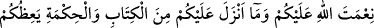
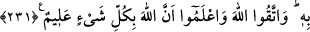

231. Kadınları boşadığınız ve onlar da bekleme müddetlerini bitirdikleri vakit ya
onları iyilikle tutun yahut iyilikle bırakın. Fakat haksızlık ederek ve zarar vermek
için onları nikâh altında tutmayın. Kim bunu yaparsa muhakkak kendine kötülük
etmiş olur. Allah’ın âyetlerini eğlenceye almayın. Allah’ın sizin üzerinizdeki
nimetini, (size verdiği hidâyeti), size öğüt vermek üzere indirdiği Kitab’ı ve hikmeti
hatırlayın. Allah’dan korkun. Bilesiniz ki Allah, her şeyi bilir.
Âyette, iddetin, hakiki anlamda sona ermesi murad olunmamıştır. Çünkü iddet gerçek
mânâda sona erince, kocaya bundan sonra kadını iyilikle tutma hakkı yoktur. Zira “bâin
talâk” vuku bulmuştur. Bu duruma göre âyetin mânâsı: “Bekleme sürelerinin sonuna
yaklaştıklarında” şeklinde olur.
Bu âyet-i celîle, Ensârdan Sâbit b. Yesâr hakkında nâzil olmuştur. Sâbit karısını
boşamış, iddeti bitmeye yaklaşınca onu, tekrar yanına almış, sonra sırf ona zarar vermek
kasdıyla tekrar boşamıştı. Bunun üzerine bu âyet indi.
“Mârûf”; şerîat, örf ve âdet bakımından akılların uygun bulduğu ve nefislerin hoş
karşıladığı şeylerdir. Burada kasdolunan mânâsı; iyi geçimdir.
Kadınları boşayıp iddetleri bitmeye yaklaşınca, ya iyilikle tutup, güzel bir geçimle
evlilik hayatına devam etmek veya iyilikle iddetlerini tamamlamak üzere serbest
bırakmak lazımdır. İddetlerini ve hapsedilmişliklerini uzatmak sûretiyle haklarına
tecâvüz edip, zarar vermek amacıyla onları salıvermeyip tutmak pek uygun olmayan bir
durumdur.
Şayet denilse ki: “Onları iyilikle bırakın” emri ile “haklarına tecâvüz edip zarar
vermek için onları (yanınızda) tutmayın” yasağı arasında mânâ bakımından ne fark
vardır. Çünkü bir şeyin yapılmasını emretmek, o şeyin zıddını yapmaktan nehyetmek
demektir. O takdirde burada gözüken tekrârın faydası nedir? Buna şöyle cevap veririz:
Buradaki emir, tekrar ifâde etmediği gibi, emredilen şeye uymanın bütün vakitlerde
matlûb bir şey olduğunu da göstermez. Dolayısıyla “Onları, zarar vermek amacıyla
tutmayınız” yasağı, yukarıda zikredilen tutma şeklinin, bütün vakitlerde uygun görülen
bir tutma olduğuna delâlet etmekle, kadınları iyilikle tutma yolundaki tavsiyeyi
mübâlağalı olarak pekiştirmektedir.
Kadınları, zulmetmek ve haksızlık etmek kasdıyla yanlarında tutanlar, bu yolla
Allah’ın azâbına mârûz kaldıkları için kendi nefislerine zulmetmiş olurlar. ‘Bu sebeple
yüz çevirmek ve muktezâsınca amel etmede gevşek davranmak sûretiyle Allah’ın burada
zikredilen ahkâmla ilgili âyetlerini veya diğer bütün âyetlerini eğlenceye almayın.
Âyetin muhâtabları mü’minlerdir. Allah’ın âyetleriyle alay etmek ve onları eğlenceye
almak ise mü’minlerin yapacağı bir iş değildir. Bu sebeple nehyin mânâsı: “Allah’ın
âyetlerini iyi bir şekilde dinleyip anlayınız ve bunlara uygun şekilde amel etmeye gayret